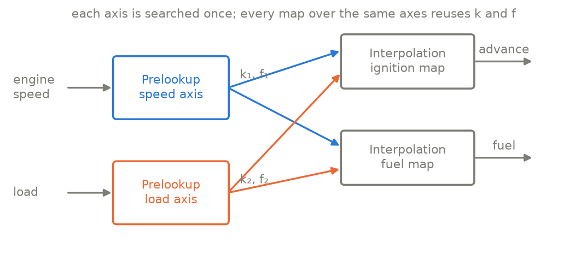

Model workspace and calibrations¶
Engine control software is code plus calibration: the same algorithm runs in many vehicles with different numbers (gains, maps, limits). Nervus separates the two the same way.
Workspace variables¶
The Model Workspace panel (next to Diagnostics) lists named variables stored with the model:
| Column | Meaning |
|---|---|
| Name | A Python-style name: letters, digits and _, e.g. Kp, fuel_map |
| Value | A number (1.5), a vector or matrix ([1 2; 3 4]) or an expression of variables above it (Kp/Ti) |
| Unit, Min, Max | Documentation, and range checks: a value outside [min, max] is reported in Diagnostics |
| Description | Free text |
Click Add to create a variable, then edit the cells. All changes can be undone.
Using variables in blocks¶
Type a variable name or an expression into any numeric block parameter:
| Parameter | Value |
|---|---|
| Gain → gain | Kp |
| Discrete PID → I | Kp/Ti |
| Zero-Order Hold → sample_time | Ts |
| Gain → gain | 1/tau |
The block shows the expression on the canvas. When a variable changes, every block that uses it updates. Expressions are evaluated again each time the model is simulated. A variable that is still used by a block cannot be deleted.
Expressions may use + - * / ** %, the functions sqrt, exp, log, sin, cos, abs and the
constants pi, e, inf, true and false. Comparisons (==, !=, <, <=, >, >=) and and, or, not give 1 (true)
or 0 (false), so Kp * (MODE == 2) works. The MATLAB spellings ~=, &&, || and ~ are accepted too.
Autocompletion and Find Usages¶
While you type a parameter in the Properties panel, the names of the variables the block can see (the model
workspace and the masks around it) pop up; Enter or a click completes the word under the cursor, so
Kp / T becomes Kp / Ti.
Select a variable in the Model Workspace and press Find Usages to list every place that uses it: block
parameters (gain = 1 / r_wheel), State Chart param declarations, mask variables, variant conditions and
other workspace variables. Double-click a row to open the subsystem and select the block. Inside a masked
subsystem whose mask defines the same name, the mask's own variable is meant, so those blocks are not
listed. From Python: d.usages("r_wheel").
Calibration maps over shared axes¶
ECU software is full of curves and maps over the same few axes: engine speed, load, coolant temperature. For one map, use a 1-D or 2-D Lookup Table. When several maps share an axis, use a Prelookup block per axis and an Interpolation using Prelookup block per map: the breakpoint search runs once, and every map reuses its result (index k and fraction f).

Put the axes and tables in the workspace, so they can be calibrated and swapped with parameter sets:
d.workspace["speed_axis"] = [800, 1500, 3000, 6000] # rpm
d.workspace["load_axis"] = [0.2, 0.5, 1.0]
d.workspace["ign_map"] = [[10, 8, 5], [20, 16, 10], [30, 25, 18], [35, 30, 22]] # ° before TDC
speed = d.add(Prelookup(breakpoints="speed_axis"))
load = d.add(Prelookup(breakpoints="load_axis"))
ign = d.add(Interpolation(dimensions=2, table="ign_map")) # inputs: k1, f1, k2, f2
The result is identical to a 2-D Lookup Table with linear interpolation, in the simulation and in the generated C. Hover over the Interpolation block's ports to see which input is which.
Data types and constants for the ECU¶
Two columns of the Model Workspace control how a variable ends up in generated C code:
| Column | Meaning | Example |
|---|---|---|
| Type | the storage type in C: double (default), single, int8 … uint32, boolean, or fixed point fixdt(signed, bits, fraction_bits) |
an ignition map as fixdt(1,16,7): 2 bytes per value, steps of 1/128 ° |
| Cal. | ticked: calibratable, in RAM and in the A2L file. Unticked: a constant in ROM (flash), not in the A2L file | a sensor's fixed conversion factor |
Smaller types matter on an ECU: a 16 × 16 map takes 2 KB as double but 512 bytes as int16. The
simulation uses exactly the value the type can hold (hover over the value to see it), so the model and the
generated C stay bit-true. In C, the parameter is stored as integers and scaled where a block reads it:
/* ign_map: fixdt(1,16,7): value = 0.0078125 * stored + 0 */
int16_T ign_map[12];
...
y = ((real_T)ign_P.ign_map[(r) * 3u + (c)] * 0.0078125 + 0.0) ...
The A2L file describes the stored type (e.g. SWORD) and the scaling (COEFFS_LINEAR), so a calibration
tool such as INCA or CANape shows and edits physical values. Typed parameters work for scalar parameters
(gains, limits, thresholds) and for lookup tables and their breakpoints. Matrix parameters (matrix gains,
state-space matrices) must stay double.
from nervus.core import Variable
ws.add(Variable("ign_map", ign, "Ignition advance", "°", data_type="fixdt(1,16,7)"))
ws.add(Variable("speed_axis", [800, 1500, 3000, 6000], unit="rpm", data_type="uint16"))
ws.add(Variable("k_sensor", 0.0125, "ADC to volts", "V", calibratable=False)) # const, in ROM
Data dictionary: signal objects¶
Workspace variables describe parameters; the Data Dictionary (a tab next to the Model Workspace)
describes signals. A signal object has a name, a data type (inherit = any), a unit, a range and a
description. Right-click a wire and choose Name Signal… to give the source output a name; the name is
shown under the wire and binds the output to the signal object of that name. Then:
- the data type is checked when the model is compiled (an output that must be
uint16but isdoubleis an error naming the block); - the range is checked after every simulation: values outside [min, max] are reported as warnings, e.g. signal engine_speed is above its maximum 7000 from t = 7 s (up to 8000 rpm);
- results can be read by the name:
res["engine_speed"], also for a subsystem's output; - the generated A2L file lists the signal as a measurement with its name, description, unit and limits,
so INCA or CANape show
engine_speed [rpm]instead of an internal variable name.
Each name can be given to one output. Double-click a row to show the block that drives the signal; names without an object are listed too, so Add with such a row selected creates the object. Signal objects are saved with the model, and every change can be undone.
from nervus.core.dictionary import SignalObject
model.signals.add(SignalObject("engine_speed", "double", "rpm", 0, 7000, "Crankshaft speed"))
model.name_signal("engine", 0, "engine_speed")
simulate(model)["engine_speed"]
Parameter sets (calibrations)¶
A parameter set is a file (.nervcal) with values for some or all of the variables:
- Save set… writes the current values, e.g.
petrol.nervcal. - Load set… applies a file's values to the model (one undo step). Values for variables the model does not have are ignored and listed in the status bar.
Use them to switch between engine variants or calibration versions, or to share a tuning without changing
the model. The example throttle_tight.nervcal is a higher-gain calibration for throttle_pi.nervus.
From Python¶
from nervus import ParameterSet, load, simulate
d = load("examples/throttle_pi.nervus")
d.workspace["Kp"] = 2.0 # change a variable
res = simulate(d, params={"Ki": 60.0}) # override for one run only
d.workspace.apply(ParameterSet.load("examples/throttle_tight.nervcal").values)
ParameterSet.from_workspace(d.workspace, "my_tune").save("my_tune.nervcal")